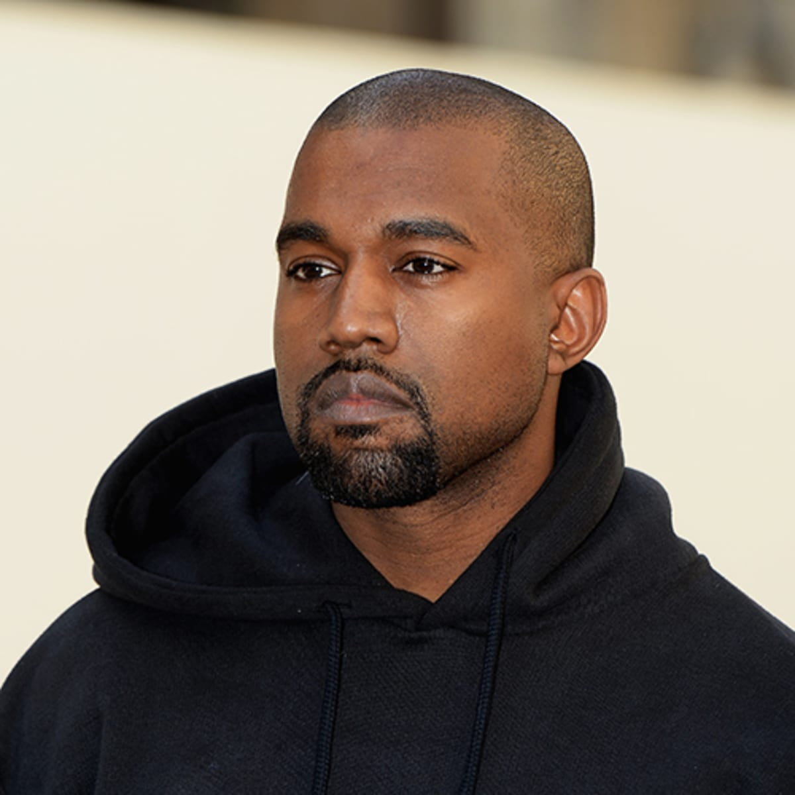

The Queens Death

May the Queen rest in peace, she was a icon for our generation any many past, she will be rembered for all of time, and the whole world will mourn her death, of the majesty the Queen
The Queens Death
May the Queen rest in peace, she was a icon for our generation any many past, she will be rembered for all of time, and the whole world will mourn her death, of the majesty the Queen
Kanye West new school
Why would Kanye do this, seems really weird especially becasue he is a artist, not sure why he is doing this but seems pretty interesting
Nba 5 questions answered

Anwers to Questions you may have about the upcoming nba season, if you do have anymore unanswered questions then email at 42069@gmail.com